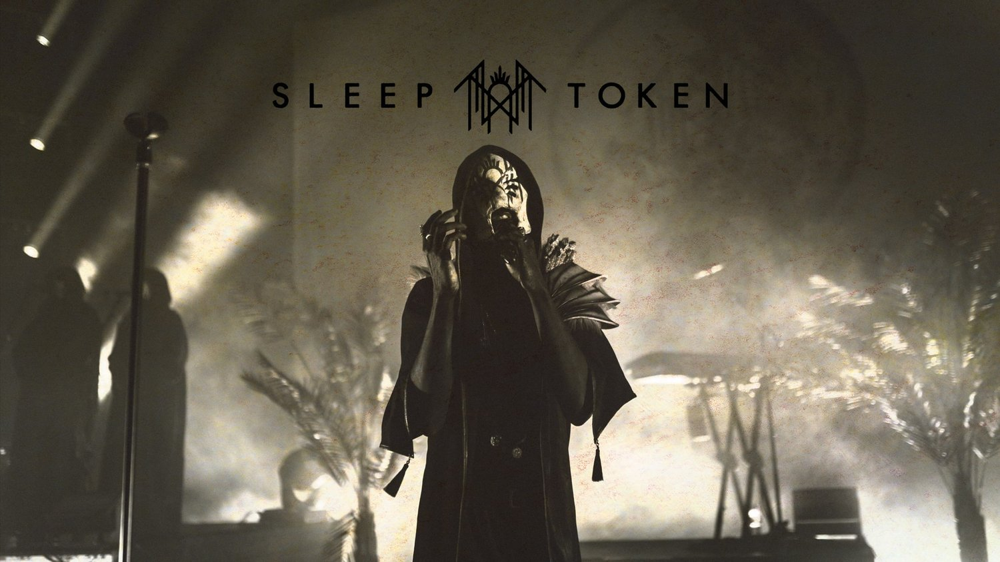

SLEEP TOKEN
Hybrid metal act experienced a rapid rise in the first half of 2023, all without revealing their faces. In this piece, we explore their lineage, lore, and how they inspire unity within the unknown.

Sleep Token performing their Live debut of "Take Me Back To Eden" on their Tour opener of their German Headline Rituals in Munich on December 05th 2023.
The main subject of the creation of this page is to let everyone know the creative minds of Sleep Token.
The Symbol Of Sleep Token
The rune is harbinger of positive change, concerning not only the material aspect of life, but also the spiritual, high. It portends an imminent improvement meeting with real love, which one can interpret as Sleep.
The Meaning of Sleep Token
Every song is considered an offering or a token in the name of "Sleep" hence the band name. The band's lyrics delve into deep messaging of themes of relationships and love, to almost Christian imagery and lyrical themes in the band's artwork and lyrics. Many calling the band a "masked Christian band".